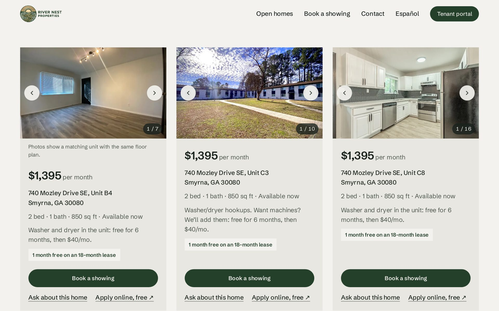
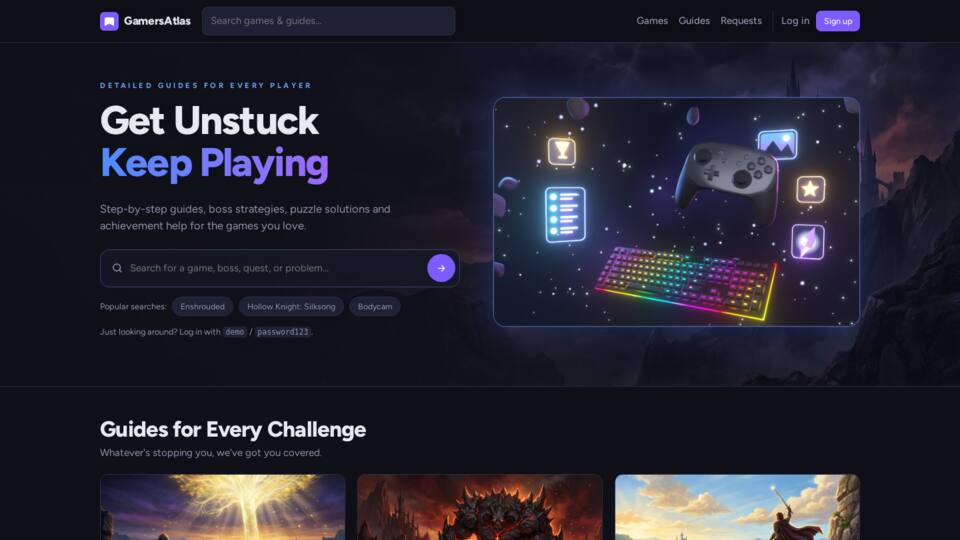
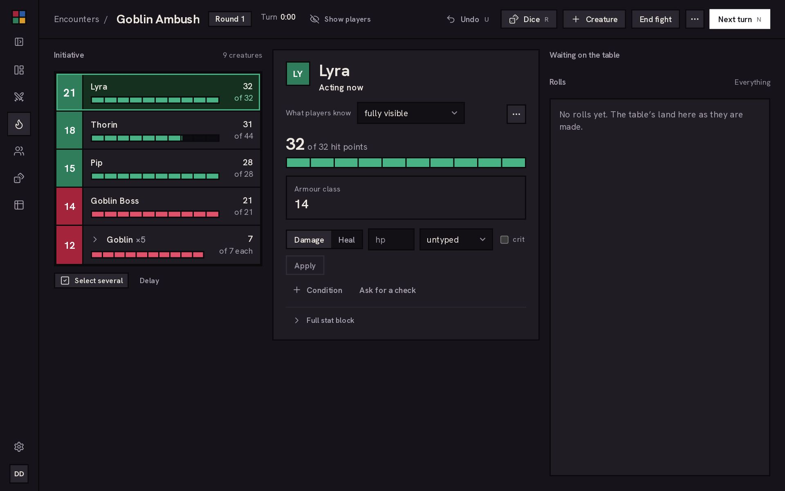
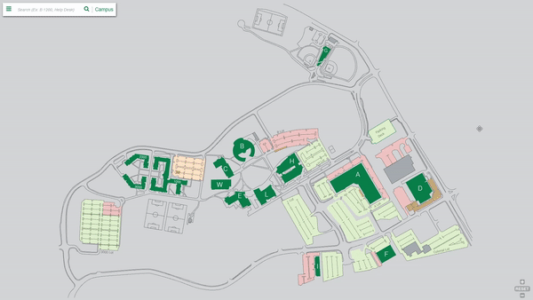
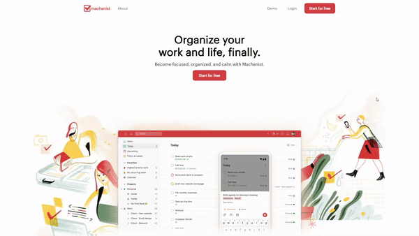
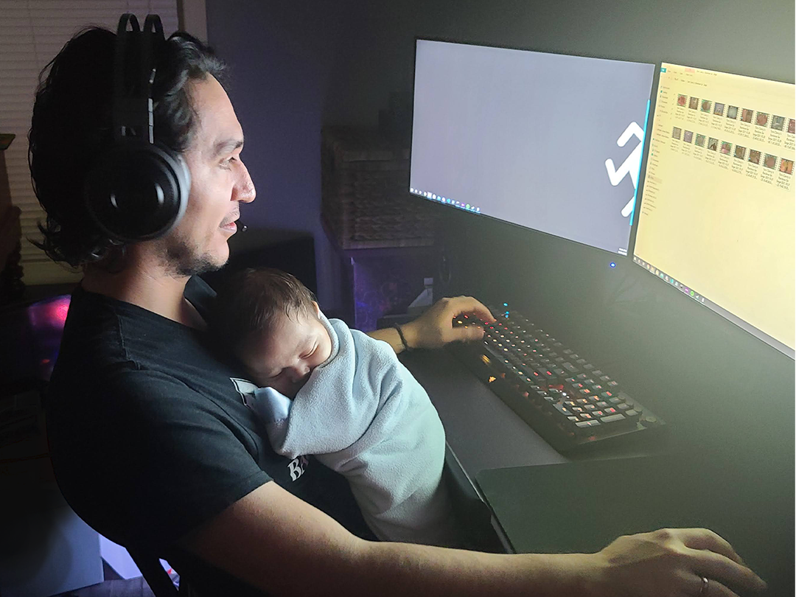

David Rivera
Full-stack developer in Atlanta, strongest on the front end. I build software for a Smyrna property manager and a smoke and vape shop.
Open to front-end and full-stack roles, remote or Atlanta.
I1Next stop: River Nest
Listings and photos sync from Buildium, the company's property-management system, which saves about 40–60 minutes of manual work per listing. The old site's inquiry form didn't send anywhere. Now each inquiry reaches the team inbox and opens a lead in Basecamp.
React 19 ∙ TypeScript ∙ PHP ∙ Buildium API ∙ Prerendering
Under the hood: every page is pre-rendered to HTML so it loads fast and indexes well. A small PHP API returns a cached Buildium listings feed with a static fallback; an image proxy converts photos to WebP; failed Basecamp posts queue and retry.

Goodreads for video games, with your friends in it. Shelve what you play, pull in achievements from Steam and Xbox, and find friends for co-op. Guides open at the part you're stuck on.
React 19 ∙ Vite ∙ React Router ∙ CSS
Under the hood: Express 5 API on SQLite with full-text search and an admin queue for approving user-submitted guides. Shipped with Docker and Caddy. Private repo; I can walk through the code on a call.

A live combat tracker my own D&D table plays with. The DM runs initiative, hit points and conditions from one screen; players see only what their characters would know, and every roll and hit reaches every open screen as it happens.
Next.js 15 ∙ React 19 ∙ TypeScript
Under the hood: a rules engine kept free of database calls, so more than 2,300 automated tests run against it. Postgres through Prisma with serializable transactions, an event log with undo, live updates over server-sent events, and D&D Beyond character import.
Operations toolkit
Private repos$ commission dry-run --month 2026-08 pulling sales from the POS API… matching shifts from the scheduling API… applying commission + tip rules… done: report ready ∙ nothing written
Command-line tools for River Nest Properties and Nimbus Smoke and Vape. They sync accounting, scheduling and point-of-sale APIs, audit timesheets against real hours, and calculate monthly commission and tips.
Private company code; I can walk through the architecture on a call.
iRepairIT automation
Internal| Measure | Result |
|---|---|
| Training compliance | 64% → 98% |
| Time on monthly financial processing | 12 hours → 45 min |
A Discord bot wired to Twilio for customer text alerts, an instant repair-cost calculator that standardized quotes across stores, and a Trello webhook pipeline that took training-compliance follow-ups off managers' plates. Managers worried a new web app would be hard to learn or maintain, so I automated the Excel spreadsheets they already used.
Earlier builds
4 stops
GGCMaps
Team lead of four. Searchable pan-and-zoom campus floor plans, forked 24 times. 2017 to 2018.

Machenist
A Todoist-style task manager, date picker included. Flask, React, Redux. 2022.
Front end
- React ∙ Next.js ∙ TypeScript
- Tailwind ∙ CSS ∙ Vite
- Accessibility ∙ prerendering
Back end
- Node ∙ Express ∙ Python ∙ Flask ∙ PHP
- PostgreSQL ∙ SQLite
- Prisma ∙ Drizzle ∙ SQLAlchemy
Integrations
- REST ∙ OAuth 2.0 ∙ webhooks
- Server-sent events
- CLI tooling ∙ automation
Shipping
- Docker ∙ Caddy ∙ Linux
- Git ∙ TDD
- Jan 2025 to now
Operations & Systems Manager ∙ Pirani Properties
Own the integrations and part of the finance systems across four businesses. The operations toolkit (A1) was built here.
- Sep 2023 to Jan 2025
Family sabbatical
Full-time caregiving during a major family transition.
- May to Sep 2023
Senior Software Developer ∙ Southern Exteriors
Traced slow search to redundant database calls and over-fetching, introduced unit testing to stop regressions, and wrote the reporting queries the company's app couldn't produce.
- Mar to Aug 2022
Software Engineering Immersive ∙ App Academy
950+ hours of full-stack training. Stakr, Machenist and RarePnT (E2–E4) came out of it.
- Oct 2018 to Jan 2022
Continuous Improvement Lead ∙ iRepairIT
Built the automation suite (A2) and the onboarding program that kept up as the company tripled its workforce.
- Education
B.S. Information Technology ∙ Georgia Gwinnett College
Software development track. GGCMaps (E1) started here.
About

At twelve I pressed the PRGM key on a TI-83 to see what it did, and I've been writing programs ever since. I studied software development in college, then spent years in HR and operations.
Those years shaped how I build. I've been the person stuck with bad software, so I design for the people who have to use it every day.
Outside of work I'm a dad first, and happiest when I'm with my family. I've also run the same D&D campaign for six years, which is why the combat tracker exists.
David
- Based
- Smyrna / Atlanta, GA ∙ open to remote
- Speaks
- English and Spanish (both native), French (intermediate)
Contact ∙ end of the line
Hiring for a front-end or full-stack role, or need a site or internal tool for your business? Write to me at
contact@davidrivera.meI usually reply within a day.